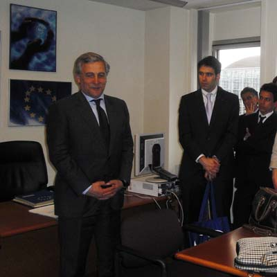

11/04/11 European Commission Vice-President Antonio Tajani receives the Master's Programme of the Real Instituto de Estudios Europeos

On 5 April the Vice-President of the European Commission and Commissioner for Industry and Entrepreneurship, Antonio Tajani, received the Príncipe Felipe class of the Master's Programme of the Real Instituto de Estudios Europeos in Strasbourg, following his meeting with the philanthropist Bill Gates.On the same day the members of the Master's Programme held working sessions with the Deputy Secretary General of the Council of Europe, as well as with other figures such as Jaime Mayor Oreja, Juan Fernando López Aguilar, Carlos Iturgaiz and Spain's Representative to the Council of Europe.
The Real Instituto de Estudios Europeos, which is celebrating its 25th anniversary, held working sessions the previous day at the Court of Justice of the European Union and the European Investment Bank, and subsequently in Brussels at the Council and the European Commission and in Frankfurt at the European Central Bank.